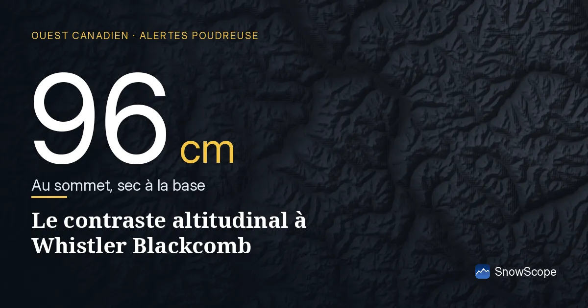
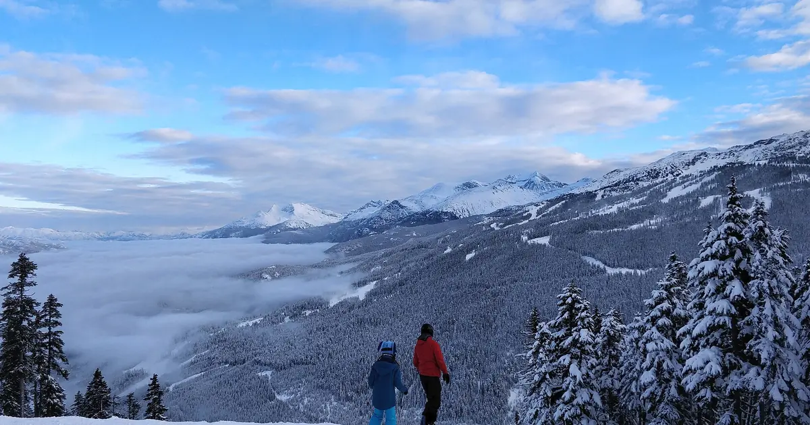
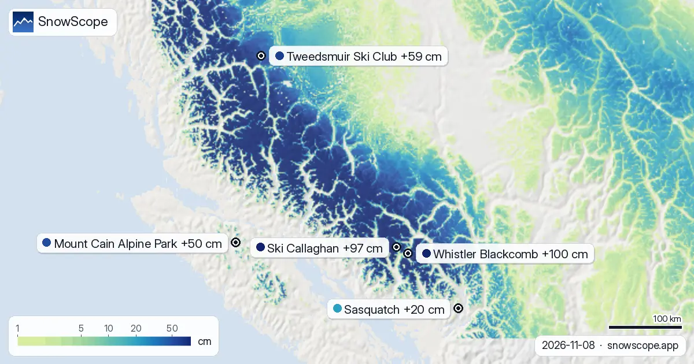

Le contraste altitudinal à Whistler Blackcomb : 96 cm au sommet, sec à la base
Whistler Blackcomb en tête de l'ouest du Canada avec 100 cm de poudreuse en trois jours jusqu'au 8 novembre, mais la profondeur varie fortement selon l'altitude. La base reste sèche tandis que le sommet affiche 96 cm, et 62 cm supplémentaires sont annoncés pour les prochains jours.
Consultez les prévisions neige en temps réel pour Whistler Blackcomb sur l'application SnowScopeHauteurs de neige, alertes poudreuse et carte 3D, gratuitement.
Le contraste altitudinal
D'un point de vue hydrique, cet écart altitudinal nous indique que le niveau de congélation le 8 novembre était bas, situé entre 940 et 1 520 mètres. La neige est tombée au-dessus de ce niveau ; en dessous, les précipitations sont tombées sous forme de pluie ou de neige mouillée et n'ont pas tenu. Aux altitudes moyennes (1 456 m), SnowScope montre 62 cm de neige, confirmant que la limite était bien au-dessous du sommet.
| Station | Hauteur de neige | Neige fraîche, 72 h | Attendu, jours suivants | Sommet |
|---|---|---|---|---|
| Whistler Blackcomb | 131 cm | 100 cm | 62 cm | 2 259 m |
| Ski Callaghan | 82 cm | 97 cm | 53 cm | 998 m |
| Tweedsmuir Ski Club | 56 cm | 59 cm | 39 cm | 1 650 m |
| Mount Cain Alpine Park | 95 cm | 50 cm | 21 cm | 1 616 m |
| Sasquatch | 28 cm | 20 cm | 4 cm | 1 316 m |

Quels domaines ont reçu le plus de neige
Whistler Blackcomb a reçu le plus de poudreuse dans la région en 72 heures, suivi de près par Ski Callaghan avec 97 cm sur ses pentes supérieures. Tweedsmuir Ski Club en a accumulé 59 cm, Mount Cain Alpine Park 50 cm, et Sasquatch 20 cm. Cette variation reflète non seulement la configuration de la tempête mais aussi le niveau de congélation à chaque site et la manière dont les montagnes canalisent l'air. Dans l'ensemble de la région, 45 des 57 domaines affichent maintenant un couvert de neige, confirmant que la poudreuse s'accumule sur toute la chaîne.

Pourquoi la base est restée sèche
La base de Whistler se situe à 653 mètres. Le 8 novembre, le niveau de congélation s'échelonnait entre 940 mètres en minimum et 1 520 mètres en maximum. Durant une grande partie de la journée, la base était en dessous du niveau de congélation, donc les précipitations sont tombées sous forme de pluie. Avec le réchauffement du jour, le niveau de congélation a monté, mais à ce moment, la majorité de la neige avait déjà remonté et franchi la montagne. C'est typique en début de saison : les faibles niveaux de congélation poussent la poudreuse vers les hautes altitudes, laissant la base et les fonds de vallée à nu.
Plus de neige arrive, mais encore plus haut
La prévision pour les trois prochains jours annonce 62 cm de neige supplémentaire à Whistler Blackcomb. Le 9 novembre, le niveau de congélation chute brusquement à 680 mètres, permettant à la neige de tomber plus bas. Mais le 11 novembre, le niveau de congélation remonte à 2 170 mètres en minimum et 2 930 mètres en maximum. Cela signifie que la poudreuse nouvelle la plus abondante (46 cm prévus pour le 11 novembre) tombera principalement au-dessus de 2 170 mètres, s'ajoutant à ce qui est déjà la partie la plus enneigée de la montagne.
L'eau stockée dans la neige fine
D'un point de vue hydrique, la majorité de la neige nouvelle se concentre dans une bande étroite en altitude sur la montagne. Les altitudes moyennes affichent environ 62 cm et le sommet 96 cm, deux chiffres modestes selon les normes de mi-saison. Le manteau neigeux est fin en début de saison, et les rochers peuvent émerger à travers. À mesure que la saison progresse et que plus de neige tombe, cela remplira progressivement le réservoir d'eau stocké sur toute la chaîne. Les fleuves et réservoirs en aval dépendent de cette accumulation ; pour l'instant, l'eau est bloquée en altitude et dispersée.
Notes pratiques sur la neige
Whistler Blackcomb offre la meilleure poudreuse de l'ouest du Canada en ce moment, mais la profondeur est concentrée en altitude. La base et les pentes basses restent fines ou dégarnies. Le proche Ski Callaghan présente des conditions similaires, avec 82 cm sur les pentes supérieures mais seulement 3 cm à la base. Avant de vous aventurer en hors-piste ou en terrain hors-domaine, consultez le bulletin d'avalanche officiel de la région. Les pentes en début de saison sont rapides et réactives aux nouveaux apports.
Conseils aux skieurs
- Skiez en altitude : la majorité de la neige nouvelle est au-dessus de 1 456 mètres. Les pentes basses restent clairsemées et peuvent avoir un maigre couvert sur les rochers.
- Surveillez le niveau de congélation : le 11 novembre, il pourrait dépasser 2 170 mètres. Toute précipitation ce jour-là pourrait commencer par de la neige en altitude et se transformer en pluie plus bas.
- Consultez le bulletin officiel d'avalanche avant de vous aventurer en hors-piste : les chutes abondantes récentes ont augmenté la charge sur la montagne.
- Envisagez des alternatives : Ski Callaghan a reçu 97 cm en 72 heures si vous cherchez de la bonne poudreuse près de Whistler.
- Attendez-vous au tassement : la neige fine du début de saison se compacte rapidement avec les nouveaux apports.
À propos de ces chiffres
Les hauteurs de neige des stations sont la neige la plus épaisse sur le haut du domaine à la date indiquée ; ce sont des estimations pour une zone, pas une mesure en un point. Les prévisions peuvent changer. Consultez toujours le bulletin d'avalanche officiel avant le hors-piste.
Bulletins d'avalanche officiels: Avalanche Canada
Citer ce bulletin
Pour la recherche, l'enseignement ou la presse : chiffres et graphiques réutilisables librement sous CC BY 4.0 avec cette citation.
SnowScope (2026), Le contraste altitudinal à Whistler Blackcomb : 96 cm au sommet, sec à la base, https://snowscope.app/blog/fr/2026/11/western-canada-whistler-blackcomb-fresh-snow-powder-alert-8-november-2026.html, consulté le 2026-11-08
SnowScope (Atlas Labs). (2026, November 8). Le contraste altitudinal à Whistler Blackcomb : 96 cm au sommet, sec à la base. SnowScope snow reports. https://snowscope.app/blog/fr/2026/11/western-canada-whistler-blackcomb-fresh-snow-powder-alert-8-november-2026.html
BibTeX
@misc{snowscope2026westerncanadawhistlerbla,
author = {{SnowScope (Atlas Labs)}},
title = {Le contraste altitudinal à Whistler Blackcomb : 96 cm au sommet, sec à la base},
year = {2026},
month = nov,
howpublished = {\url{https://snowscope.app/blog/fr/2026/11/western-canada-whistler-blackcomb-fresh-snow-powder-alert-8-november-2026.html}},
note = {Published 2026-11-08 20:08 UTC; accessed 2026-11-08}
}· CC BY 4.0 · Méthodes, données et outils →
Whistler Blackcomb : neige et température selon l'altitude, cet hiver vs l'hiver dernier (outils) →
Suivre Whistler Blackcomb
Gratuit : un message quand la neige arrive, et la météo chaque matin.